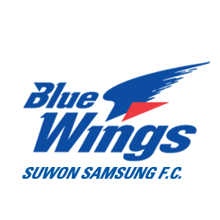
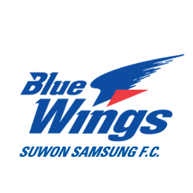

나의 팀을 소개합니다
나의 팀을 소개합니다
 대한민국 프로축구 팀 수원 삼성 블루윙즈를 응원하는 데이터 분석가 입니다.
대한민국 프로축구 팀 수원 삼성 블루윙즈를 응원하는 데이터 분석가 입니다.
팀 소개
- - 연고지 : 수원
- - 경기도 수원시 수원 월드컵 경기장
- - 창단년도 : 1995년
- - 1995년 12월 15일(29주년)
- - 우승횟수 : 24회
- - K리그1(4회)
- - 코리아컵(5회)
- - 리그컵(6회)
- - 슈퍼컵(3회)
- - AFC 챔피언스 리그(2회)
- - 아시안 슈퍼컵(2회)
- - 등등...
내 소개
- Giuhub 페이지
- Bioinformatician 경력 2년 반(2021년 10월~2024년 5월)strong>

- 데이터 분석 과정 공부중 since 2024년 10월~